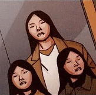

- Fate
- Selesta
-
WIKI
Фейт Коннорс
Фейт Коннорс — Родилась в семье из четырех человек

Фейт всегда была близка с матерью, в то время как Кейт больше любила
отца
Родители протестовали против тоталитарного режима, который в то время
только устанавливался. С родителями Фейт и Кейт часто бывали на
антиправительственных маршах и прочих собраниях "Свободных", лидером
которых был их отец.
Сестры видели, как их мать была убита в ходе Ноябрьского бунта. После
смерти Эрики отец впал в депрессию и из-за чувства вины начал
выпивать.
В шестнадцать лет Фейт оставила отца и Кейт, чтобы жить на улице, так
как тоска по умершей матери стала невыносимой. Чтобы выжить, она
начала промышлять грабежом.
В итоге она набрела на берлогу Бегущего по имени Меркури. Поймав ее на
месте преступления, тот взял ее под свое крыло и начал тренировать для
того, чтобы она стала Бегущей, как и он.
Интересные факты
-
В переводе с английского "Faith" значит "Вера". Первое время её имя в
статьях переводилось дословно, но в официальной локализации её
всё-таки оставили Фейт.
-
Фейт, как и её сестра Кейт, смешанного происхождения. Их мать была
азиаткой, а отец — американцем
- Фейт и Кейт — близнецы.
-
Первую татуировку (знак Бегущих на глазу) Фейт сделала после того, как
официально доставила первую посылку. Схему на левой руке она сделала
позже, после событий, связанных с "Охранными системами Сильвайна" и её
матерью.
Селеста Уиллсон
Селеста — второстепенный персонаж игры и мини-комикса. Бегущая,
близкая подруга Фейт и Мерка. Так же известна как Сел. Она гордится
своим стилем работы как Бегущей и является яркой личностью, но таит в
себе некий цинизм по отношению к жизни.
О Селесте известно не так много до событий игры. Предполагается, что
она стала Бегущей после Фейт. Этот факт подтверждается её незнанием о
Джекнайфе. Была тренирована Мерком, но работает на Дрейка. Постепенно
разочаровалась в опасной жизни Бегущих и начала мечтать о возвращении
к нормальной жизни. В ответ на предположение Фейт о том, что Бегущие
постоянно борются за выживание, она ответила: "Выжить – этого мало,
надо ещё обустроить и саму жизнь." Неизвестно как, но Целеста стала
участвовать в проекте "Икар" незадолго до событий игры.